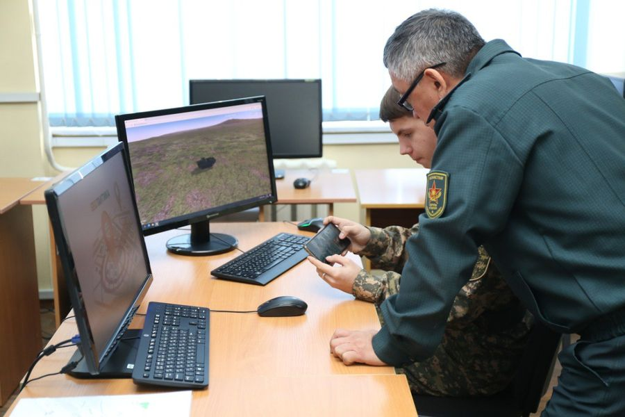

<!DOCTYPE html>
<html lang="ru">
<head>
    <meta charset="UTF-8">
    <meta name="viewport" content="width=device-width, initial-scale=1.0">
    <title>Институт Военного Дела имени Сатпаева</title>
    <link rel="stylesheet" href="css/style2.css">
    <link rel="icon" href="assets/images/logo.png" type="image/png">

</head>


</html>

<body>

        <header class="main-header">
          <div class="logo">
            
            <span>НАО Казахский Национальный Исследовательский Технический Университет имени К.И Сатпаева <br>Институт Военного Дела</span>
          </div>
          <div class="zhuldyz-logo">
            
            <span> </span>
          </div>
        </header>


    <section class="hero-section">
        <div class="hero-bg"></div>
        <div class="hero-overlay">
            <div class="hero-content">
                <h1>Обучающая программа</h1>
                <p>по дисциплине "Военная топография"</p>
                <a href="index.html" class="btn-primary">Начать обучение</a>
            </div>
        </div>
    </section>


    <section id="о-проекте" class="about-section">
        <div class="about-wrapper">
            <div class="about-text-bg">
                <div class="about-text">
                    <h2>О проекте</h2>
                    <p>Сайт разработан для студентов военной кафедры КазНИТУ имени К.И.Сатпаева . Наша цель — упростить сложные картографии и сделать её практичным инструментом.</p>
                    <p>Здесь вы найдете:</p>
                    <ul>
                        <li>материалы для обучения,</li>
                        <li>интерактивные тесты,</li>
                        <li>инструменты для тренировки.</li>
                    </ul>
                </div>
            </div>
            <div class="about-image">
                
            </div>
        </div>
    </section>


    <footer class="main-footer">
        <div class="footer-content container">
            <div class="contact-block">
                <h4>АДРЕС:</h4>
                <p>Алматы, ул.Байтурсынова, 140</p>
            </div>
            <div class="contact-block">
                <h4>КОНТАКТЫ:</h4>
                <p>+7 727 292 64 53</p>
                <p>+7 727 292 24 27</p>
                <p>+7 777 889 27 78</p>
                <p>+7 708 972 16 11</p>
            </div>
            <div class="contact-block">
                <h4>МЕНЮ:</h4>
                <p>Уроки</p>
                <p>Практика</p>
                <p>Квиз</p>
            </div>
        </div>
    </footer>


<footer class="site-footer">
  <p>© 2025 Учебная топография</p>
</footer>


</body>
</html>
